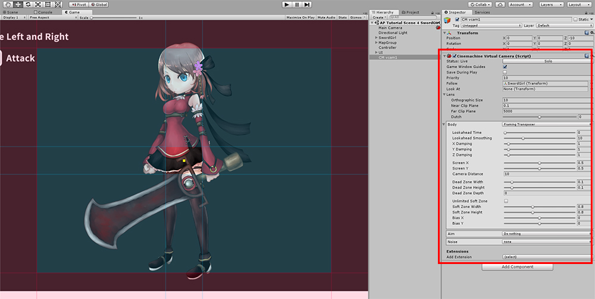
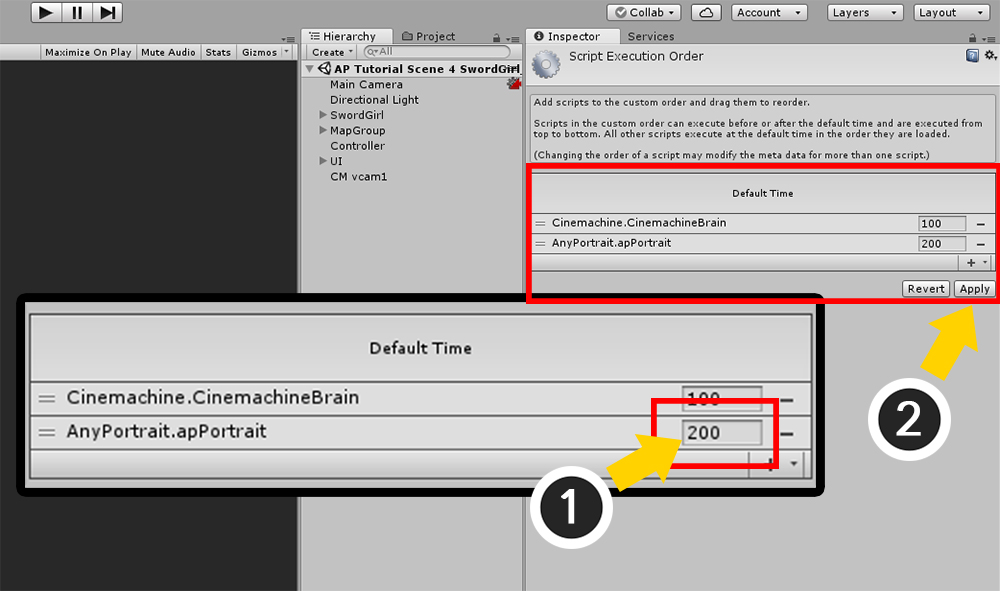

AnyPortrait > マニュアル > 他のアセットとの実行順序の問題
他のアセットとの実行順序の問題
1.5.1
AnyPortraitと他のアセットやスクリプトが一緒に動作し、誤動作を引き起こすことがあります。
これは、AnyPortraitが「アニメーション」と「レンダリング」を処理するため、スクリプトの実行順序に敏感であるためです。
この特性は、Unityの物理システムまたはアニメーションシステムが別々の段階で処理されるのと似ています。
一般的な実装方法でスクリプトを作成する場合は、この規則を認識しなくても、大きな問題なしにAnyPortraitに対処できます。
逆に、この規則に違反する特定の状況では、AnyPortraitが正しく機能しない可能性があります。
「クリッピングメッシュ」が異常にレンダリングされるのは、この問題の代表的な現象です。
このページでは、視覚的に見やすい「クリッピングメッシュのレンダリングエラー」を例にして、実行順序に関する問題を確認し、その解決方法を学びます。
メモ
このページでは、「Cinemachine」と「UniTask」を例に説明します。
これらのアセットでなくても、同様の動作方法を持つスクリプトによって問題が発生している場合は、このページの説明が役に立ちます。
AnyPortraitが正常に動作するための実行順序

AnyPortraitのコアスクリプト「apPortrait」は、他のスクリプトが実行された後に実行する必要があります。
これは主に次の2つの主な理由によるものです。
- 「アニメーションの再生」などのスクリプト関数の実行後にアニメーションシステムが動作しない場合、一貫した結果は表示されません。
- クリッピングメッシュやマテリアルコントロールなどのレンダリング処理のためには、レンダリングに関連するオブジェクトの動作が完了した状態でなければなりません。
通常、ほとんどのスクリプトはUpdate関数で動作するため、この規則を守るためにAnyPortraitは「LateUpdate」で動作します。
ただし、AnyPortraitの動作に影響を与えるスクリプトのロジックがUpdate以外の場所で実行される場合、問題が発生する可能性があります。
外部アセットがLateUpdateで実行されている場合
AnyPortraitのスクリプト「apPortrait」はデフォルトでLateUpdateで動作します。
したがって、Updateで実行されている他のほとんどのスクリプトよりも常に後で実行されるため、安定して動作します。
ところで、メインロジックがLateUpdateで動作するスクリプトがある場合、実行順序による問題が発生する可能性があります。

カメラを制御するUnityアセット「Cinemachine」はLateUpdateで動作するため、「クリッピングメッシュレンダリングの問題」が発生しやすい。
したがって、問題を解決するには、「スクリプト実行順序」オプションを変更して、右の図のように動作するようにする必要があります。

AnyPortraitのデモに「Cinemachine」を連動した画面です。
「Cinemachine」にカメラを制御することができます。

ゲームを実行すると、AnyPortraitで作られたキャラクターの目が異常にレンダリングされます。
AnyPortraitの「クリッピングマスク（Clipping Mask）」機能が正常に動作していないために発生する問題です。
AnyPortraitは、カメラの位置、方向、設定に応じてレンダリングをどうするかを決定します。
クリッピングマスク、ビルボード、Perspective演算などがこれに該当します。
しかし「Cinemachine」でカメラを制御するロジックとAnyPortraitのカメラ計算ロジックが衝突して正しくレンダリングされていないことです。
同様のロジックが互いに衝突する場合には、概ねAnyPortraitのスクリプトが後で実行されるように作成すると、問題が解決することができます。

ユニティのメニューから「Edit > Project Settings」から「Script Execution Order」を実行します。
ユニティエディタのバージョンに応じて、上記の画面とは異なる場合がありますが、「Project Settings」を実行すると、「Script Execution Order」メニューが同じ存在します。

他のアセットがインストールされた場合、「Script Execution Order」画面で「Default Time」のほか、アセットの実行順序が追加されていることがあります。
「Cinemachine」のスクリプトが「Default Time」よりも後に実行されるように設定されたことを、上記の画面で見ることができます。
AnyPortraitは「Cinemachine」が実行される順序よりも後に実行する必要があります。
(1) 「+」ボタンを押します。

「AnyPortrait.apPortrait」を選択します。

AnyPortraitが、他のアセットよりも後で実行されるようになります。
(1) 他のアセットよりも大きな値の実行順序を入力します。
(2) Applyボタンを押します。

ゲームを実行すると、現在の問題が解決されて正常にレンダリングがされます。
外部アセットがLateUpdateより後で実行される場合
1.5.1
MonoBehaviourの基本的な方法でスクリプトが実行されると、ほとんどUpdateまたはLateUpdateでロジックが実行されます。
ところで、非同期で実行されるスクリプトやアセットの場合、ロジックが実行される時点をMonoBehaviourのライフサイクルと異なって作ることができます。
「UniTask」のようなライブラリとそれを利用するアセット（「Naninovel」など）がここに該当します。

左の画像を見ると、非同期で動作するスクリプトのロジックが LateUpdate より後で実行される場合がわかります。
apPortraitより後で実行されるため、実行順序による問題が発生します。
この場合、apPortraitがそのスクリプトより後に実行されるように設定できないため、問題を解決するのは簡単ではありません。
ただし、発生する問題が「クリッピングメッシュのレンダリングエラー」に限定されている場合は、右側のように問題を解決できます。
これは、「AnyPortrait v1.5.1」に追加されたオプションを使用して、「レンダリングの直前」にクリッピングメッシュを更新できるようにするためです。
以下は、非同期スクリプトライブラリの1つである「UniTask」を使用したスクリプトの一部です。
- UniTask GitHubページ
void Start()
{
MoveCamera();
AsyncUpdateCamera().Forget();
}
private async UniTaskVoid AsyncUpdateCamera()
{
while ( Application.isPlaying && gameObject.activeInHierarchy)
{
await UniTask.Yield(PlayerLoopTiming.PostLateUpdate);
MoveCamera();
}
}
上記のスクリプト例には、LateUpdateより遅い時点のPostLateUpdateでカメラを繰り返し動かす内容が含まれています。

上記のスクリプトがカメラを動かすと、実行順序規則によって上記のようにクリッピングメッシュが異常にレンダリングされます。
この問題を解決するには、PostLateUpdateより遅い時点でクリッピング操作を行うように設定する必要があります。
(1) 「Bake」ボタンを押します。
(2) 「Setting」タブを選択します。
(3) 「Clipping Process 」オプションの値を「Before Rendering」に変更します。
このオプションは、更新ロジックの中から「クリッピング操作」のみを分離し、別々に実行するかどうかを決定します。
- In Update (Default): 更新ロジック中にクリッピング操作を同時に行います。デフォルトです。
- Before Rendering：すべてのスクリプトの更新が完了した後、レンダリング直前にクリッピング操作を実行します。

Bakeをしてゲームを実行すると、クリッピングメッシュが正常にレンダリングされることがわかります。
「Before Rendering」オプションは問題を解決する最も簡単で確実な方法ですが、推奨されるオプションではありません。
「Before Rendering」ステップは更新ではなくレンダリングに対応するイベントであり、このとき実行されるコードはレンダリングのパフォーマンスに影響します。
Unity では、更新とレンダリングは 1:1 で対応して実行されるのではなく、レンダリング段階で不必要に多くのコードが実行されると、入力遅延などの問題が発生します。
避けられない状況ではない場合は、ゲームロジックを更新段階で実行する必要があります。
他のアセットとの互換性について
AnyPortraitはUnityの「メッシュレンダラー（Mesh Renderer）」に関するアセットなので、
Unityの基本的な機能や、一般的なアセットとの互換性をある程度持っています。
しかしながら、Unityの最新機能や様々なアセットとは、ますます多様化して専門され、互換性を保証できない場合があります。
私たちのチームにその機能やアセットとの互換性を問い合わせいただいた場合は、私たちが確認してご案内いたします。
必要に応じて私たちのチームは、その問題についての更新に反映させていただきます。
- 問い合わせページ